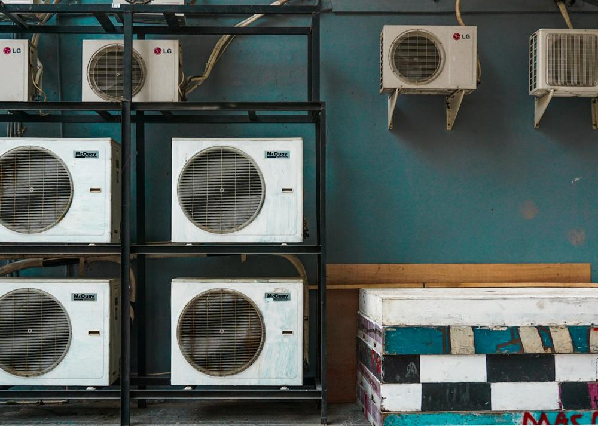

Instalação
Eficiência desde o primeiro dia.
CONFORTO TÉRMICO SEM COMPLICAÇÃO
Instalação, manutenção e higienização com atendimento pontual para casas e empresas.
Serviços
Atendimento para split, cassete e sistemas comerciais, com diagnóstico antes do serviço.
Eficiência desde o primeiro dia.
Previna paradas e preserve o equipamento.
Ar mais limpo para o ambiente.
Cuidado periódico completo.
Diagnóstico antes de qualquer intervenção.
Plano de manutenção para empresas.
Nossa essência
A ClimaPro cuida do seu ar-condicionado para que ele trabalhe melhor e dure mais. Técnicos qualificados, orientação direta e soluções sob medida.
Como funciona
Conte seu equipamento e necessidade.
Avaliamos a melhor solução.
Serviço com orientação e cuidado.
Instalações
Tubulação alinhada, dreno correto e equipamento bem fixado.


Em destaque
Instalação e cuidado para seu conforto diário.
Manutenção programada para equipes e clientes.
Planejamento e registros para sua operação.
Avaliações · 4.9/5
“Agendaram rápido, chegaram no horário e explicaram a manutenção sem complicar.”
“Fazem o PMOC do nosso escritório. Nunca mais tivemos problema.”
“Instalação limpa, sem sujeira na parede.”
Antes de começar
Sim, incluindo manutenção programada e PMOC.
Sim, quando o serviço exige avaliação no local.
Vamos conversar
Informe o equipamento e o serviço. Retornamos com data e orçamento.
Conversar no WhatsApp ↗